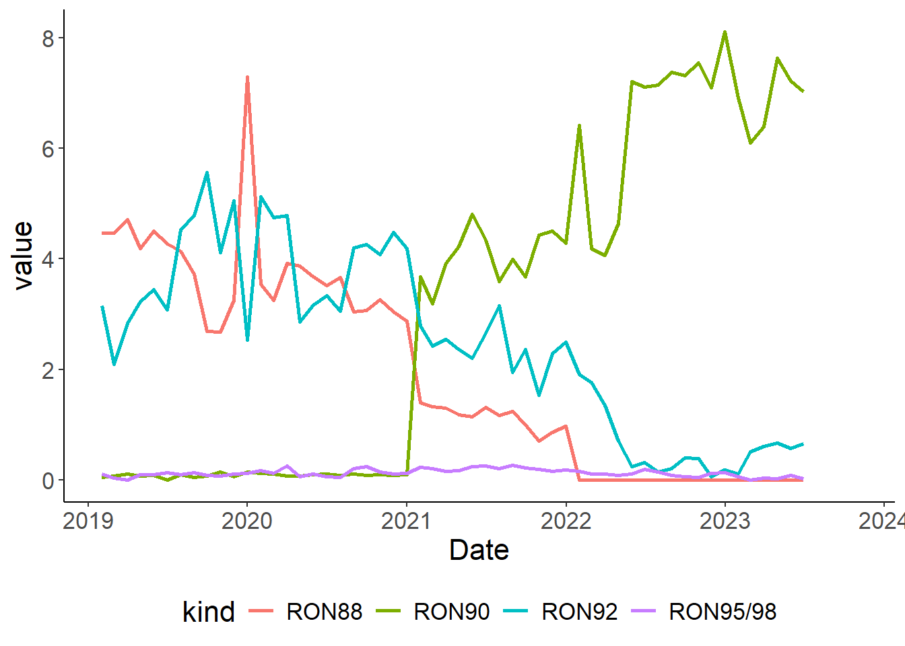
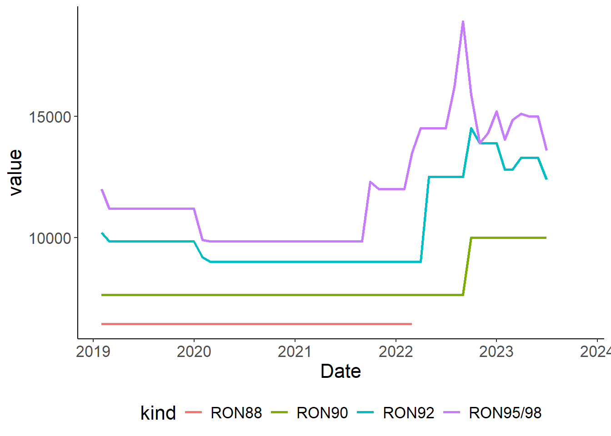
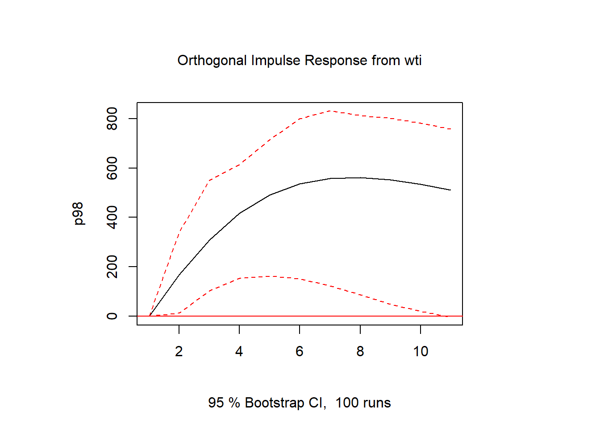
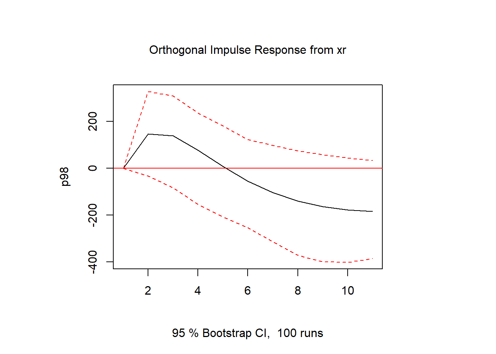

Macro Policy Brief: Global Inflation and the Oil Production Glut
![]()
Executive Summary
Asumsi APBN menunjukkan optimisme pemerintah di mana dolar akan stabil di 15000 Rp/US$, inflasi di 2,8% dan suku bunga di kisaran 6,7%. Akan tetapi, situasi global menunjukkan adanya kemungkinan suku bunga internasional yang tetap tinggi untuk waktu yang lama (higher for longer). Di samping itu, kemungkinan adanya tekanan harga minyak internasional akibat OPEC yang masih menahan produksi juga dapat berdampak pada pasar minyak bumi di dalam negeri. Mengingat Indonesia saat ini net importer, maka akan sangat penting menjaga nilai tukar dari ketidakpastian global.
Asumsi APBN 2024
Indonesia telah menentukan asumsi dasar APBN 2024 (Kementerian Keuangan 2023) seperti dapat dilihat pada Table 1. Beberapa nilai di asumsi ini nampak turun dibandingkan tahun sebelumnya di tahun 2023 dan 2022 (Santia 2022). Pemerintah sepertinya mengasumsikan bahwa inflasi dan suku bunga tahun ini akan lebih rendah dibanding tahun-tahun sebelumnya, dengan harga minyak dunia yang juga turun. Apakah ini asumsi yang cukup tepat? Bagaimana implikasi dari deviasi asumsi-asumsi ini?
| Indikator | Nilai | Satuan |
|---|---|---|
| Pertumbuhan ekonomi | 5,2 | % |
| Inflasi | 2,8 | % |
| Nilai tukar rupiah | 15.000 | US$ |
| Suku bunga SBN 10 tahun | 6,7 | % |
| ICP | 82 | US$/barel |
Harga minyak
Harga minyak merupakan indikator yang paling relevan bagi Direktorat Jenderal Minyak dan Gas (Ditjen Migas). Karena Indonesia merupakan net importir minyak bumi, harga internasional menjadi semakin relevan, tidak seperti batubara yang dapat direkayasa dengan kebijakan perdagangan seperti Domestic Market Obligation (DMO). Harga minyak dunia (FRED 2023) dan produksi OPEC (ycharts.com 2023), organisasi penghasil minyak terbesar, dapat dilihat di Figure 1.
Figure 1 (a) menunjukkan adanya tren kenaikan produksi dari negara-negara OPEC. Tren produksi minyak OPEC berkurang ketika COVID-19 masih merajalela, kemungkinan akibat lemahnya permintaan akibat lockdown. Peningkatan produksi perlahan terjadi dan menukik cukup tajam tidak lama setelah perang Rusia-Ukraina terjadi. Peningkatan produksi tersebut sudah mencapai tren 2019, namun tampak berhenti bahkan cenderung menurun di pertengahan 2023.
Figure 1 (b) menunjukkan tren harga yang serupa. Akan tetapi, harga minyak WTI terus menanjak dan sudah tembus 110 USD/barrel pada bulan Mei 2022. Namun, tren ini kembali menurun dan stagnan tak lama kemudian. Akhir-akhir ini, harga minyak kembali naik ke level yang sesuai dengan asumsi APBN. Meski demikian, OPEC masih berenacan untuk menahan produksi untuk mengerek naik harga minyak (Seba 2023). Karena itu pemerintah harus waspada.
Inflasi global
Inflasi global masih menjadi ancaman yang cukup pelik mengingat terjadinya krisis baru di Timur Tengah. Bank Sentral Amerika Serikat telah mengumumkan meski mereka mungkin akan menahan tingkat suku bunga di level tinggi seperti saat ini namun untuk waktu yang panjang (Elena 2023). Hal ini membuat Indonesia harus waspada, karena jika tingkat suku bunga masih akan tinggi, maka hal ini akan membuat Bank Indonesia (BI) harus memilih antara mempertahankan rupiah dengan cara melepas devisa atau dengan cara menaikkan suku bunga, atau bahkan membiarkan rupiah melemah.
Sumber data pada Figure 2 adalah dari Bank Indonesia (2023). Figure 2 (a) menunjukkan tingginya policy rate dari negara-negara barat. Hal ini diakibatkan oleh tingginya inflasi di jangka waktu tersebut sehingga bank sentral di negara-negara tersebut harus menaikkan suku bunga. Bank Indonesia pun akhirnya harus mengikuti demi mencegah larinya pemegang aset Rupiah ke negara-negara tersebut, yang dapat mendorong pelemahan nilai tukar rupiah.
Dapat dilihat pada Figure 2 (b) bahwa nilai tukar rupiah cenderung melemah di sekitar jangka waktu yang sama seiring dengan peningkatan suku bunga dari bank sentral negara barat. Meskipun rupiah sempat kembali menguat di awal tahun 2023, namun berita “higher for longer” kembali membuat investor menahan aset dolar lebih lama. BI pun harus mengikuti kenaikan ini, seperti terlihat dari naiknya lagi suku bunga BI baru-baru ini.
Di samping itu, ada potensi level rupiah akan floating di posisi yang lebih tinggi dibandingkan tren sebelumnya. Figure 2 (a) menunjukkan bahwa naiknya BI rate tidak setinggi negara-negara barat, sehingga interest rate gap Indonesia dengan negara-negara tersebut mengecil. Jika BI tetap menjaga suku bunga di level ini, maka ada kemungkinan rupiah akan tetap float di posisi yang rendah dan membuat asumsi makro bergeser.
Implikasi ke depan
Tren harga minyak dan inflasi global akan berpengaruh terhadap harga minyak di Indonesia. Asumsi makro APBN 2024 bisa meleset akibat OPEC yang berniat menjaga harga minyak agar tetap tinggi beserta dengan kemungkinan tekanan terhadap nilai tukar rupiah. Tentunya hal ini juga berpotensi menambah kenaikan biaya operasional Pertamina. Jika harga dibiarkan floating, maka naiknya harga produk migas seperti BBM harus diekspektasi. Tentunya hal ini tergantung apakah Bank Indonesia akan bereaksi terhadap hal ini. Yang jelas, harus ada yang dikorbankan antara tingkat suku bunga SBN dan nilai tukar rupiah jika tren ini terus berlanjut.


Melihat dampaknya langsung ke BBM mungkin cukup sulit. Hal ini karena pasar BBM di Indonesia dikontrol dengan sangat ketat oleh pemerintah. Dapat dilihat pada Figure 3 (a) bahwa konsumsi RON88 terjun bebas karena produksi BBM jenis RON88 dihentikan. Sebelumnya, diperkenalkan RON90 yang produksinya terus meningkat sampai sekarang. Secara keseluruhan, produksi BBM masih tinggi.
Namun di sisi harga, tampak terlihat adanya kenaikan harga terutama bensin RON tinggi yang naik lebih dulu seperti ditunjukkan oleh Figure 3 (b). Hal ini tentu imbas dari WTI juga naik di saat yang hampir sama. Jika asumsi makro APBN meleset, maka hal ini berpotensi menaikkan harga ke depannya.
Salah satu hal yang juga penting untuk dipertimbangkan adalah Program Percepatan Kendaraan Bermotor Listrik Berbasis Baterai (KBLBB) telah diamanatkan dalam Perpres Nomor 55 Tahun 2019 (Kementerian ESDM 2023). Jika program ini berhasil, maka permintaan BBM bisa ditekan. Pasar karbon juga bisa dimanfaatkan untuk menekan permintaan. Keseriusan pemerintah dalam mencapai net zero di 2050 adalah satu aspek yang juga perlu kita pertimbangkan (Gupta 2023).
Impulse Response function
Pada bagian ini dicoba ajukan sebuah usaha untuk mengestimasi dampak dari gejolak global terhadap harga BMM RON tinggi. Metode yang digunakan untuk studi awal ini adalah Vector Auto Regression (VAR) untuk melihat arah dari impulse response function (IRF) dari perubahan satu standar deviasi dari gejolak global (Pfaff 2007).
Pada percobaan kali ini digunakan 3 variabel, yaitu harga RON95/98 (\(p89\)), harga WTI (\(wti\)) dan nilai tukar rupiah terhadap dolar (\(xr\)). Semua variabel dalam bulanan. RON95/98 dipilih karena harga RON lain akan tergantung dari besarnya subsidi yang dialokasikan. Dianggap bahwa RON paling tinggi adalah yang paling sensitif perubahan harganya. WTI dan nilai tukar adalah proxy dari global production glut dan global inflation. Series dapat dilihat di Figure 4.
Model yang digunakan untuk studi awal ini adalah VAR(1). Dengan kata lain, estimasi yang dilakukan adalah:
\[ \begin{aligned} p98_t&=\beta_{10}+\beta_{11} p98_{t-1}+\beta_{12} wti_{t-1}+\beta_{13} xr_{t-1} \\ wti_t&=\beta_{20}+\beta_{21} p98_{t-1}+\beta_{22} wti_{t-1}+\beta_{23} xr_{t-1} \\ xr_t&=\beta_{30}+\beta_{31} p98_{t-1}+\beta_{32} wti_{t-1}+\beta_{33} xr_{t-1} \end{aligned} \]
Ekspektasi kita adalah bahwa harga dari RON95/98 dipengaruhi oleh harga WTI dan nilai tukar, tapi tidak sebaliknya1. Artinya, kita harapkan signifikansi dari \(\beta_{12}\) dan \(\beta_{13}\) namun kita harapkan \(\beta_{20}\) dan \(\beta_{30}\) tidak signifikan. Di bawah ini adalah hasil dari VAR(1) tersebut:
VAR Estimation Results:
=========================
Endogenous variables: p98, wti, xr
Deterministic variables: const
Sample size: 53
Log Likelihood: -982.95
Roots of the characteristic polynomial:
0.8842 0.8125 0.4743
Call:
VAR(y = wew, p = 1)
Estimation results for equation p98:
====================================
p98 = p98.l1 + wti.l1 + xr.l1 + const
Estimate Std. Error t value Pr(>|t|)
p98.l1 6.492e-01 8.322e-02 7.802 3.84e-10 ***
wti.l1 3.289e+01 7.991e+00 4.116 0.000147 ***
xr.l1 4.276e-01 2.413e-01 1.772 0.082658 .
const -4.159e+03 3.226e+03 -1.289 0.203342
---
Signif. codes: 0 '***' 0.001 '**' 0.01 '*' 0.05 '.' 0.1 ' ' 1
Residual standard error: 761.8 on 49 degrees of freedom
Multiple R-Squared: 0.8941, Adjusted R-squared: 0.8877
F-statistic: 138 on 3 and 49 DF, p-value: < 2.2e-16
Estimation results for equation wti:
====================================
wti = p98.l1 + wti.l1 + xr.l1 + const
Estimate Std. Error t value Pr(>|t|)
p98.l1 0.0003425 0.0007563 0.453 0.6527
wti.l1 0.9296972 0.0726263 12.801 <2e-16 ***
xr.l1 -0.0038451 0.0021934 -1.753 0.0859 .
const 56.7470688 29.3177376 1.936 0.0587 .
---
Signif. codes: 0 '***' 0.001 '**' 0.01 '*' 0.05 '.' 0.1 ' ' 1
Residual standard error: 6.924 on 49 degrees of freedom
Multiple R-Squared: 0.901, Adjusted R-squared: 0.895
F-statistic: 148.7 on 3 and 49 DF, p-value: < 2.2e-16
Estimation results for equation xr:
===================================
xr = p98.l1 + wti.l1 + xr.l1 + const
Estimate Std. Error t value Pr(>|t|)
p98.l1 3.130e-02 4.063e-02 0.771 0.44469
wti.l1 2.442e+00 3.901e+00 0.626 0.53429
xr.l1 5.920e-01 1.178e-01 5.024 7.12e-06 ***
const 5.413e+03 1.575e+03 3.437 0.00121 **
---
Signif. codes: 0 '***' 0.001 '**' 0.01 '*' 0.05 '.' 0.1 ' ' 1
Residual standard error: 371.9 on 49 degrees of freedom
Multiple R-Squared: 0.4966, Adjusted R-squared: 0.4657
F-statistic: 16.11 on 3 and 49 DF, p-value: 2.03e-07
Covariance matrix of residuals:
p98 wti xr
p98 580388.0 376.10 -19584
wti 376.1 47.94 -983
xr -19583.8 -983.01 138337
Correlation matrix of residuals:
p98 wti xr
p98 1.00000 0.0713 -0.06911
wti 0.07130 1.0000 -0.38171
xr -0.06911 -0.3817 1.00000Seperti kita lihat bahwa harga WTI sangat berpengaruh terhadap harga RON95/98. Nilai tukar cukup berpengaruh meski signifikansinya ada di level 8%. Sementara itu, terbukti bahwa sebaliknya tidak terjadi: \(p98_{t-1}\) tidak signifikan terhadap dua variabel lainnya.
berikutnya dilakukan impulse response function, yaitu apa yang terjadi pada harga RON95/98 di jangka panjang jika ada shock sebesar 1 standar deviasi terhadap harga WTI dan nilai tukar.


Dapat dilihat pada Figure 5 (a) bahwa kenaikan harga WTI sebanyak 1 standar deviasi mengakibatkan naiknya harga RON95/98 sampai 200 rupiah di bulan berikutnya. Kenaikan ini stabil di sekitar bulan ke-7. Namun dapat dilihat bahwa standar deviasi dari estimasi ini cukup lebar.
Dampak shock dari nilai tukar sedikit berbeda (lihat Figure 5 (b)). Melemahnya nilai rupiah sebanyak 1 standar deviasi mengakibatkan naiknya harga RON95/98, wajar mengingat BBM sebagian besar harus diimpor. Namun dampak ini akan melemah dalam 3 bulan ke depan dan malah berkurang di jangka panjang. Mengingat bahwa harga BBM dan nilai tukar di Indonesia seringkali diintervensi, maka intervensi-intervensi tersebut juga masuk ke dalam estimasi.
Studi singkat ini cukup masuk akal, akan tetapi keandalan model ini masih harus diperiksa. Berbagai metode lain juga dapat digunakan tergantung dari asumsi, keandalan data, dan pertanyaan yang ingin dijawab.
References
Bank Indonesia. 2023. “Statistik Ekonomi Dan Keuangan Indonesia.” Bank Indonesia. https://www.bi.go.id/id/statistik/ekonomi-keuangan/seki/Default.aspx#headingThree.
Elena, Maria. 2023. “BI Peringatkan Fenomena Higher for Longer, Apa Itu?” bisnis.com. https://ekonomi.bisnis.com/read/20231023/9/1706962/bi-peringatkan-fenomena-higher-for-longer-apa-itu.
FRED. 2023. “FRED Economic Data.” https://fred.stlouisfed.org/series/DCOILWTICO/.
Gupta, Krisna. 2023. “Greening the Grid and What It Takes.” Seminar Nasional Politeknik APP Jakarta 2023. s.id/greenpln.
Kementerian ESDM. 2023. “Pengembangan Ekosistem KBLBB Dorong Masuknya Investasi Kendaraan Listrik.” Siaran Pers Kementerian ESDM. https://ebtke.esdm.go.id/post/2023/09/14/3597/pengembangan.ekosistem.kblbb.dorong.masuknya.investasi.kendaraan.listrik#:~:text=Program%20Percepatan%20Kendaraan%20Bermotor%20Listrik%20Berbasis%20Baterai%20%28KBLBB%29,emisi%20gas%20rumah%20kaca%20serta%20mencapai%20tujuan%20tersebut.
Kementerian Keuangan. 2023. “APBN 2024 Resmi Meluncur.” 2023. https://www.djkn.kemenkeu.go.id/berita/baca/33506/APBN-2024-Resmi-Meluncur.html.
Pfaff, Bernhard. 2007. “Using the Vars Package.” https://www.researchgate.net/profile/David-Booth-7/post/How_to_select_optimal_lag_between_dependent_variable_and_independent_variables/attachment/59d649eb79197b80779a450a/AS%3A473055043559424%401489796519099/download/VARS_how_to_use.pdf.
Santia, Tira. 2022. “Tengok Perbandingan Asumsi Makro Dan Postur APBN 2022 Dan 2023.” liputan6.com. https://www.liputan6.com/bisnis/read/5044185/tengok-perbandingan-asumsi-makro-dan-postur-apbn-2022-dan-2023?page=2.
Seba, Erwin. 2023. “Oil Climbs over 2.” Reuters. https://www.msn.com/en-us/money/markets/oil-climbs-over-2-as-opec-seen-deepening-cuts/ar-AA1kftku.
ycharts.com. 2023. “OPEC Crude Oil Production.” https://ycharts.com/indicators/opec_crude_oil_production.
Footnotes
\(X\) dikatakan granger cause \(Y\) dan tidak sebaliknya jika \(X_{t-1}\) signifikan terhadap \(Y_t\) dan \(Y_{t-1}\) tidak signifikan terhadap \(X_t\)↩︎